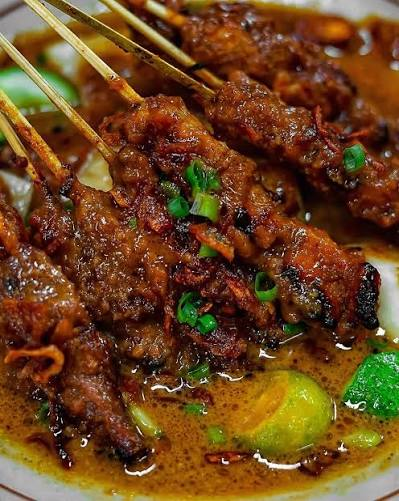
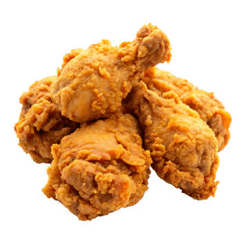
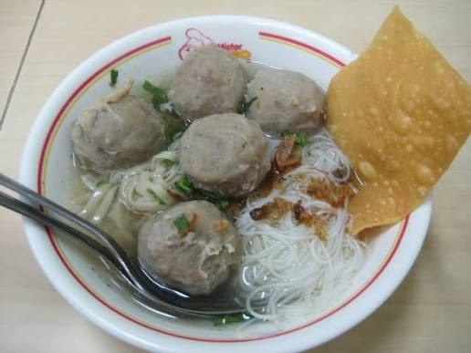
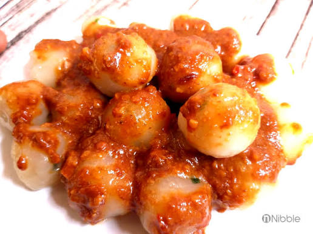

Seblak
.jpg)
Seblak adalah makanan khas Bandung. Rasanya pedas dan gurih. Seblak terbuat dari kerupuk. Biasanya ditambah telur dan bakso. Seblak sangat enak dimakan hangat. Saya sangat menyukai seblak karena rasanya lezat.
n
Seblak adalah makanan khas Bandung. Rasanya pedas dan gurih. Seblak terbuat dari kerupuk. Biasanya ditambah telur dan bakso. Seblak sangat enak dimakan hangat. Saya sangat menyukai seblak karena rasanya lezat.
n
Sate adalah makanan yang terbuat dari daging. Sate ditusuk menggunakan bambu. Sate biasanya dibakar. Rasanya gurih dan lezat. Sate disajikan dengan bumbu kacang. Saya sangat menyukai sate karena rasanya enak.

Chicken adalah makanan yang terbuat dari daging ayam. Rasanya gurih dan lezat. Chicken biasanya digoreng hingga renyah. Makanan ini sangat enak dimakan dengan nasi. Saya suka chicken karena rasanya enak dan membuat kenyang.

Bakso adalah makanan yang terbuat dari daging sapi. Bakso berbentuk bulat. Rasanya gurih dan enak. Bakso disajikan dengan kuah hangat. Biasanya ditambah mi dan sayuran. Saya sangat menyukai bakso karena rasanya lezat.

Cilok adalah makanan khas Jawa Barat. Cilok terbuat dari tepung tapioka. Bentuknya bulat dan kenyal. Cilok biasanya disajikan dengan bumbu kacang. Rasanya gurih dan lezat. Saya suka cilok karena rasanya enak.